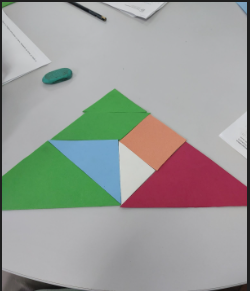

O que é Tangram
Tangram é um quebra-cabeça chinês em formato de quadrado que lhe permite formar diversas figuras utilizando suas 7 peças (2 triângulos grandes, 1 triângulo médio, 2 triângulos pequenos, 1 quadrado e 1 paralelogramo). Tais peças foram obtidas a partir de recortes do quadrado.
Veja um deles abaixo.

- Um triângulo equilátero e acutângulo Grande
- Um triângulo equilátero e acutângulo Grande
- Um triângulo equilátero e acutângulo Pequeno
- Um quadrado
- Um triângulo equilátero e acutângulo Pequeno
- Um paralelogramo
- Um triângulo equilátero e acutângulo Médio
Visto isso temos que :
"A" e "B" = 1/4 do Tangram ///// "A + B"= 1/2 (Metade)do Tangram
"C" e "E" = 1/16 do Tangram ///// "C + E"= "D" ou "F" ou "G"= 1/8 do Tangram
"D" = "F" = "G"= 1/8 do Tangram ///// "D + D" ou "D + F" ou "D +G" ou "F + G"= "A" ou "B"= 1/4 do Tangram
"C + E" + "D" ou "F" ou "G"= "A" ou "B" = 1/4 do Tangram
"C + D + E + F + G"="A + B"= 1/2(Metade) do Tangram
Podemos transformá-lo em formas e figuras diferentes
Números
Na nossa primeira aula de matemática tivemos a atividade de montar e calcular utilizando o Tangram. Eram alguns grupos nas mesas, eu fiz o número oito

Conseguimos criar formas do Tangram

/ / / / / / / / / / / / / /